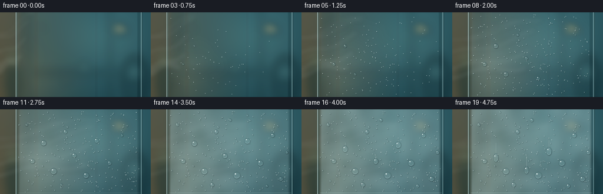

CODING AGENTS AS PIXEL WORLD MODELS
traex/GPT-5.6-Sol · phygen_111
点击播放 · 原生 RGB 像素
逐轮保存的候选
回放视频、检查图与代码变化。
每份候选均可单独播放。实际图片检查记录在下方工具轨迹中。
候选 01播放与检查图
点击播放 · 原生 RGB 像素

展开代码变化
--- 上一保存版本
+++ 本次保存版本
@@ -0,0 +1,227 @@
+from pathlib import Path
+import json, math
+import numpy as np
+from PIL import Image, ImageDraw, ImageFilter
+import artifact_io
+
+# Deterministic, hand-built 2-D condensation time-lapse.
+CASE_DIR = Path(__file__).resolve().parent
+spec = json.loads((CASE_DIR / "task_spec.json").read_text())
+W, H, N = spec["width"], spec["height"], spec["frames"]
+S = 3
+WS, HS = W*S, H*S
+rng = np.random.default_rng(111)
+
+
+def smoothstep(a, b, x):
+ if b == a:
+ return float(x >= b)
+ u = np.clip((x-a)/(b-a), 0.0, 1.0)
+ return u*u*(3.0-2.0*u)
+
+
+def make_background():
+ """Soft humid-room colors viewed through a thick, chilled pane."""
+ yy, xx = np.mgrid[0:HS, 0:WS]
+ xn, yn = xx/WS, yy/HS
+ # Warm humid room at left, cold blue ambience through the pane.
+ warm = np.clip(1.0-xn*1.55, 0, 1)[..., None]
+ top = (1.0-yn)[..., None]
+ c_cool = np.array([28, 67, 76.], float)
+ c_warm = np.array([72, 78, 65.], float)
+ arr = c_cool + warm*(c_warm-c_cool)
+ arr += top*np.array([11., 15., 16.])
+ # broad light gradients
+ glow1 = np.exp(-(((xn-.69)/.28)**2 + ((yn-.34)/.42)**2))[...,None]
+ glow2 = np.exp(-(((xn-.17)/.22)**2 + ((yn-.75)/.34)**2))[...,None]
+ arr += glow1*np.array([21.,24.,20.]) + glow2*np.array([16.,11.,4.])
+ arr = np.clip(arr, 0, 255).astype(np.uint8)
+ im = Image.fromarray(arr, "RGB")
+
+ # Intentionally defocused room shapes and bokeh beyond the pane.
+ blobs = Image.new("RGBA", (WS,HS), (0,0,0,0))
+ d = ImageDraw.Draw(blobs, "RGBA")
+ d.rectangle((0, 0, 36*S, HS), fill=(92,72,48,75))
+ d.rectangle((46*S, 0, 51*S, HS), fill=(12,35,39,95))
+ d.rectangle((184*S, 0, 190*S, HS), fill=(13,38,44,70))
+ d.rectangle((29*S, 98*S, 218*S, 107*S), fill=(12,36,39,55))
+ # indistinct vessel / plant silhouettes in the warm room
+ d.ellipse((5*S,79*S,39*S,152*S), fill=(20,41,39,115))
+ d.ellipse((15*S,64*S,29*S,91*S), fill=(93,110,77,55))
+ d.ellipse((207*S,72*S,251*S,155*S), fill=(17,45,51,100))
+ # Warm and cool circular highlights
+ for cx,cy,r,col in [
+ (202,28,10,(250,199,116,105)), (215,31,4,(255,230,172,135)),
+ (143,91,7,(133,202,202,45)), (72,25,5,(218,231,205,50)),
+ (113,118,4,(255,193,114,70)), (228,102,7,(129,184,180,42))]:
+ d.ellipse(((cx-r)*S,(cy-r)*S,(cx+r)*S,(cy+r)*S), fill=col)
+ blobs = blobs.filter(ImageFilter.GaussianBlur(7*S))
+ im = Image.alpha_composite(im.convert("RGBA"), blobs)
+
+ # The pane itself: cool transmitted tint, beveled vertical borders and reflections.
+ pane = Image.new("RGBA", (WS,HS), (0,0,0,0))
+ p = ImageDraw.Draw(pane, "RGBA")
+ p.rectangle((27*S, 0, 241*S, HS), fill=(114,181,190,18))
+ p.rectangle((29*S, 0, 34*S, HS), fill=(184,229,230,12))
+ p.rectangle((233*S, 0, 239*S, HS), fill=(7,29,36,28))
+ p.line((27*S,0,27*S,HS), fill=(204,239,238,145), width=1*S)
+ p.line((29*S,0,29*S,HS), fill=(15,44,50,90), width=1*S)
+ p.line((239*S,0,239*S,HS), fill=(189,227,228,100), width=1*S)
+ p.line((241*S,0,241*S,HS), fill=(9,30,34,110), width=1*S)
+ # soft vertical reflected bands establish a smooth glass surface
+ p.rectangle((58*S,0,65*S,HS), fill=(224,251,248,8))
+ p.rectangle((161*S,0,166*S,HS), fill=(224,251,248,7))
+ pane = pane.filter(ImageFilter.GaussianBlur(0.6*S))
+ return Image.alpha_composite(im, pane)
+
+BASE = make_background()
+
+# Stable low-frequency moisture field, made from low resolution noise.
+noise_small = rng.random((12, 22)).astype(np.float32)
+noise_im = Image.fromarray(np.uint8(noise_small*255), "L").resize((WS,HS), Image.Resampling.BICUBIC)
+noise_im = noise_im.filter(ImageFilter.GaussianBlur(8*S))
+MOISTURE = np.asarray(noise_im, dtype=np.float32)/255.0
+YH, XW = np.mgrid[0:HS,0:WS]
+X = XW/S; Y = YH/S
+
+# Dew seeds. Most are microscopic, a few grow into characteristic beads.
+small_drops = []
+for i in range(235):
+ x = rng.uniform(32, 237)
+ y = rng.uniform(4, 141)
+ # Vapor first reaches the lower-left/centre region, then the rest of the glass.
+ dist = math.hypot((x-71)/190, (y-88)/125)
+ birth = np.clip(.035 + .29*dist + rng.uniform(-.11,.23), .03, .79)
+ rad = float(rng.uniform(.32,1.25) * (0.78 + 0.60*rng.random()**3))
+ small_drops.append((x,y,birth,rad,rng.random()))
+
+large_drops = [
+ (55,88,.08,3.8,.20), (74,57,.12,4.6,.77), (91,105,.19,5.4,.42),
+ (111,38,.22,3.3,.13), (126,78,.25,4.1,.64), (146,112,.29,5.7,.31),
+ (164,53,.34,4.9,.83), (186,91,.39,5.2,.51), (207,44,.43,3.8,.26),
+ (221,118,.48,4.5,.72), (45,26,.31,2.8,.11), (104,128,.42,3.7,.91),
+ (197,130,.54,3.2,.37), (135,18,.50,2.9,.58), (231,73,.57,3.4,.68)
+]
+
+
+def composite_fog(im, t):
+ """Patchy fog film spreads outward from first vapor contact."""
+ dist = np.sqrt(((X-72)/205)**2 + ((Y-87)/150)**2)
+ onset = .015 + .44*dist + .11*(MOISTURE-.5)
+ age = np.clip((t-onset)/.54, 0, 1)
+ # Condensation is irregular; even late, patches of view remain visible.
+ a = (age**1.28) * (0.25 + .30*MOISTURE)
+ pane_mask = ((X >= 29) & (X <= 239)).astype(np.float32)
+ # tiny clear rim at pane edges
+ pane_mask *= smoothstep(29,35,X) * (1-smoothstep(233,239,X))
+ a *= pane_mask
+ # Cool-white film, brighter in lower-left vapor contact region.
+ fog_rgb = np.empty((HS,WS,4), dtype=np.uint8)
+ fog_rgb[...,0] = 172
+ fog_rgb[...,1] = 202
+ fog_rgb[...,2] = 202
+ fog_rgb[...,3] = np.uint8(np.clip(a*255,0,255))
+ return Image.alpha_composite(im, Image.fromarray(fog_rgb,"RGBA"))
+
+
+def steam_layer(t):
+ """Translucent water-vapor tendrils drift in from the warm left and meet pane."""
+ layer = Image.new("RGBA", (WS,HS), (0,0,0,0))
+ d = ImageDraw.Draw(layer, "RGBA")
+ # plume moves across the surface, strongest before the pane is fully wet
+ strength = 0.58 + .42*(1-smoothstep(.52,1.0,t))
+ for j in range(5):
+ pts=[]
+ phase = j*1.27
+ y0 = (101 - j*12 + 8*math.sin(phase+t*2.2))*S
+ reach = (45 + 117*smoothstep(0,.58,t) + j*7)*S
+ for k in range(28):
+ u=k/27
+ x=(-14*S) + u*reach
+ y=y0 - u*(20+7*j)*S + math.sin(u*7.5+phase+t*2.6)*6*S + math.sin(u*2.6+phase)*4*S
+ pts.append((x,y))
+ alpha=int((24-2*j)*strength)
+ d.line(pts, fill=(226,242,236,alpha), width=int((10-1.0*j)*S), joint="curve")
+ d.line(pts, fill=(242,250,246,int(alpha*.55)), width=max(S,int((2.3-.2*j)*S)), joint="curve")
+ return layer.filter(ImageFilter.GaussianBlur(4.0*S))
+
+
+def draw_droplet(layer, x, y, r, seed, elongated=0.0):
+ """A translucent convex bead with rim, refracted core, shadow, and highlight."""
+ x*=S; y*=S; r*=S
+ ry = r*(1.0+elongated)
+ rx = r*(1.0-0.18*elongated)
+ sh = Image.new("RGBA", (WS,HS), (0,0,0,0))
+ sd = ImageDraw.Draw(sh,"RGBA")
+ sd.ellipse((x-rx+.55*S,y-ry+.85*S,x+rx+.55*S,y+ry+.85*S), fill=(2,21,27,70 if r>2*S else 48))
+ sh = sh.filter(ImageFilter.GaussianBlur(max(.45*S,r*.14)))
+ layer.alpha_composite(sh)
+ d=ImageDraw.Draw(layer,"RGBA")
+ box=(x-rx,y-ry,x+rx,y+ry)
+ # glassy body and dark lower rim
+ d.ellipse(box, fill=(138,190,194,28), outline=(19,56,63,90), width=max(1,int(.48*S)))
+ inset=min(rx*.35, ry*.35, max(.24*S,r*.14))
+ arcbox=(x-rx+inset,y-ry+inset,x+rx-inset,y+ry-inset)
+ d.arc(arcbox, 205, 340, fill=(4,36,44,95), width=max(1,int(.42*S)))
+ d.arc(arcbox, 22, 148, fill=(222,248,244,150), width=max(1,int(.40*S)))
+ # pinpoint specular glint on upper-left
+ hr=max(.34*S, min(1.0*S,r*.18))
+ hx=x-rx*.37; hy=y-ry*.38
+ d.ellipse((hx-hr,hy-hr,hx+hr,hy+hr), fill=(245,255,252,215))
+ if r > 6*S:
+ d.ellipse((x+rx*.28,y+ry*.35,x+rx*.50,y+ry*.52), fill=(32,80,86,75))
+
+
+def render_frame(index):
+ t=index/(N-1)
+ im=BASE.copy()
+ # Visible airborne vapor precedes and overlaps surface nucleation.
+ im=Image.alpha_composite(im, steam_layer(t))
+ im=composite_fog(im,t)
+
+ wet=Image.new("RGBA",(WS,HS),(0,0,0,0))
+ trail=Image.new("RGBA",(WS,HS),(0,0,0,0))
+ td=ImageDraw.Draw(trail,"RGBA")
+
+ # Fine nuclei multiply and grow without frame-to-frame flicker.
+ for x,y,birth,rmax,seed in small_drops:
+ if t <= birth: continue
+ p=smoothstep(birth,min(1,birth+.47),t)
+ r=rmax*(.22+.78*math.sqrt(p))
+ draw_droplet(wet,x,y,r,seed)
+
+ # Major beads. Three begin to run under gravity late in the time-lapse.
+ for idx,(x,y,birth,rmax,seed) in enumerate(large_drops):
+ if t <= birth: continue
+ p=smoothstep(birth,min(1,birth+.48),t)
+ r=rmax*(.18+.82*math.sqrt(p))
+ fall=0.0
+ if idx in (1,4,6) and t>.68:
+ fall=(smoothstep(.68,1,t)**1.35)*(18+7*(idx%3))
+ # narrow wet track catches light behind the falling bead
+ tx=x*S
+ td.line((tx,(y-r*.2)*S,tx,(y+fall)*S), fill=(211,239,237,65), width=max(1,int(r*.34*S)))
+ td.line((tx+1*S,(y-r*.2)*S,tx+1*S,(y+fall)*S), fill=(11,48,55,36), width=max(1,int(r*.16*S)))
+ draw_droplet(wet,x,y+fall,r,seed, elongated=min(.55,fall/45))
+
+ trail=trail.filter(ImageFilter.GaussianBlur(.35*S))
+ im=Image.alpha_composite(im,trail)
+ im=Image.alpha_composite(im,wet)
+
+ # Fine cold edge shine and slight blue vignette remain on top of moisture.
+ edge=Image.new("RGBA",(WS,HS),(0,0,0,0))
+ ed=ImageDraw.Draw(edge,"RGBA")
+ ed.line((27*S,0,27*S,HS),fill=(222,249,247,145),width=1*S)
+ ed.line((240*S,0,240*S,HS),fill=(207,240,240,90),width=1*S)
+ # soft bottom condensation meniscus
+ if t>.28:
+ a=int(55*smoothstep(.28,.9,t))
+ ed.line((31*S,142*S,238*S,142*S),fill=(210,242,240,a),width=1*S)
+ im=Image.alpha_composite(im,edge)
+ im=im.convert("RGB").resize((W,H),Image.Resampling.LANCZOS)
+ return np.asarray(im,dtype=np.uint8)
+
+
+frames=np.stack([render_frame(i) for i in range(N)],axis=0)
+artifact_io.save(frames,CASE_DIR)
+print(f"saved {frames.shape[0]} RGB frames, {W}x{H}, to {CASE_DIR}")
候选 02播放与检查图
点击播放 · 原生 RGB 像素

展开代码变化
--- 上一保存版本
+++ 本次保存版本
@@ -151,12 +151,11 @@
x*=S; y*=S; r*=S
ry = r*(1.0+elongated)
rx = r*(1.0-0.18*elongated)
- sh = Image.new("RGBA", (WS,HS), (0,0,0,0))
- sd = ImageDraw.Draw(sh,"RGBA")
- sd.ellipse((x-rx+.55*S,y-ry+.85*S,x+rx+.55*S,y+ry+.85*S), fill=(2,21,27,70 if r>2*S else 48))
- sh = sh.filter(ImageFilter.GaussianBlur(max(.45*S,r*.14)))
- layer.alpha_composite(sh)
d=ImageDraw.Draw(layer,"RGBA")
+ # At 3x supersampling this translucent offset ellipse downsamples into a soft
+ # contact shadow, avoiding a costly full-frame blur for every microscopic bead.
+ d.ellipse((x-rx+.55*S,y-ry+.80*S,x+rx+.75*S,y+ry+1.0*S),
+ fill=(2,21,27,58 if r>2*S else 40))
box=(x-rx,y-ry,x+rx,y+ry)
# glassy body and dark lower rim
d.ellipse(box, fill=(138,190,194,28), outline=(19,56,63,90), width=max(1,int(.48*S)))
候选 03播放与检查图
可观测工具轨迹
实际执行的命令与返回图片。
命令 1exit 0
/bin/bash -lc "cat prompt.txt && printf '\\n---RULES---\\n' && cat GENERATION_RULES.md && printf '\\n---SPEC---\\n' && cat task_spec.json"
命令 2exit 1
/bin/bash -lc "find . -maxdepth 2 -type f -printf '%p\\n' | sort && printf '\\nTOOLS\\n' && command -v ffmpeg && command -v blender && command -v python3"
命令 3exit 0
/bin/bash -lc 'cat artifact_io.py'
命令 4exit 2
/bin/bash -lc "cat > generate.py <<'PY'
from pathlib import Path
import json, math
import numpy as np
from PIL import Image, ImageDraw, ImageFilter
import artifact_io
# Deterministic, hand-built 2-D condensation time-lapse.
CASE_DIR = Path(__file__).resolve().parent
spec = json.loads((CASE_DIR / \"task_spec.json\").read_text())
W, H, N = spec[\"width\"], spec[\"height\"], spec[\"frames\"]
S = 3
WS, HS = W*S, H*S
rng = np.random.default_rng(111)
def smoothstep(a, b, x):
if b == a:
return float(x >= b)
u = np.clip((x-a)/(b-a), 0.0, 1.0)
return u*u*(3.0-2.0*u)
def make_background():
\"\"\"Soft humid-room colors viewed through a thick, chilled pane.\"\"\"
yy, xx = np.mgrid[0:HS, 0:WS]
xn, yn = xx/WS, yy/HS
# Warm humid room at left, cold blue ambience through the pane.
warm = np.clip(1.0-xn*1.55, 0, 1)[..., None]
top = (1.0-yn)[..., None]
c_cool = np.array([28, 67, 76.], float)
c_warm = np.array([72, 78, 65.], float)
arr = c_cool + warm*(c_warm-c_cool)
arr += top*np.array([11., 15., 16.])
# broad light gradients
glow1 = np.exp(-(((xn-.69)/.28)**2 + ((yn-.34)/.42)**2))[...,None]
glow2 = np.exp(-(((xn-.17)/.22)**2 + ((yn-.75)/.34)**2))[...,None]
arr += glow1*np.array([21.,24.,20.]) + glow2*np.array([16.,11.,4.])
arr = np.clip(arr, 0, 255).astype(np.uint8)
im = Image.fromarray(arr, \"RGB\")
# Intentionally defocused room shapes and bokeh beyond the pane.
blobs = Image.new(\"RGBA\", (WS,HS), (0,0,0,0))
d = ImageDraw.Draw(blobs, \"RGBA\")
d.rectangle((0, 0, 36*S, HS), fill=(92,72,48,75))
d.rectangle((46*S, 0, 51*S, HS), fill=(12,35,39,95))
d.rectangle((184*S, 0, 190*S, HS), fill=(13,38,44,70))
d.rectangle((29*S, 98*S, 218*S, 107*S), fill=(12,36,39,55))
# indistinct vessel / plant silhouettes in the warm room
d.ellipse((5*S,79*S,39*S,152*S), fill=(20,41,39,115))
d.ellipse((15*S,64*S,29*S,91*S), fill=(93,110,77,55))
d.ellipse((207*S,72*S,251*S,155*S), fill=(17,45,51,100))
# Warm and cool circular highlights
for cx,cy,r,col in [
(202,28,10,(250,199,116,105)), (215,31,4,(255,230,172,135)),
(143,91,7,(133,202,202,45)), (72,25,5,(218,231,205,50)),
(113,118,4,(255,193,114,70)), (228,102,7,(129,184,180,42))]:
d.ellipse(((cx-r)*S,(cy-r)*S,(cx+r)*S,(cy+r)*S), fill=col)
blobs = blobs.filter(ImageFilter.GaussianBlur(7*S))
im = Image.alpha_composite(im.convert(\"RGBA\"), blobs)
# The pane itself: cool transmitted tint, beveled vertical borders and reflections.
pane = Image.new(\"RGBA\", (WS,HS), (0,0,0,0))
p = ImageDraw.Draw(pane, \"RGBA\")
p.rectangle((27*S, 0, 241*S, HS), fill=(114,181,190,18))
p.rectangle((29*S, 0, 34*S, HS), fill=(184,229,230,12))
p.rectangle((233*S, 0, 239*S, HS), fill=(7,29,36,28))
p.line((27*S,0,27*S,HS), fill=(204,239,238,145), width=1*S)
p.line((29*S,0,29*S,HS), fill=(15,44,50,90), width=1*S)
p.line((239*S,0,239*S,HS), fill=(189,227,228,100), width=1*S)
p.line((241*S,0,241*S,HS), fill=(9,30,34,110), width=1*S)
# soft vertical reflected bands establish a smooth glass surface
p.rectangle((58*S,0,65*S,HS), fill=(224,251,248,8))
p.rectangle((161*S,0,166*S,HS), fill=(224,251,248,7))
pane = pane.filter(ImageFilter.GaussianBlur(0.6*S))
return Image.alpha_composite(im, pane)
BASE = make_background()
# Stable low-frequency moisture field, made from low resolution noise.
noise_small = rng.random((12, 22)).astype(np.float32)
noise_im = Image.fromarray(np.uint8(noise_small*255), \"L\").resize((WS,HS), Image.Resampling.BICUBIC)
noise_im = noise_im.filter(ImageFilter.GaussianBlur(8*S))
MOISTURE = np.asarray(noise_im, dtype=np.float32)/255.0
YH, XW = np.mgrid[0:HS,0:WS]
X = XW/S; Y = YH/S
# Dew seeds. Most are microscopic, a few grow into characteristic beads.
small_drops = []
for i in range(235):
x = rng.uniform(32, 237)
y = rng.uniform(4, 141)
# Vapor first reaches the lower-left/centre region, then the rest of the glass.
dist = math.hypot((x-71)/190, (y-88)/125)
birth = np.clip(.035 + .29*dist + rng.uniform(-.11,.23), .03, .79)
rad = float(rng.uniform(.32,1.25) * (0.78 + 0.60*rng.random()**3))
small_drops.append((x,y,birth,rad,rng.random()))
large_drops = [
(55,88,.08,3.8,.20), (74,57,.12,4.6,.77), (91,105,.19,5.4,.42),
(111,38,.22,3.3,.13), (126,78,.25,4.1,.64), (146,112,.29,5.7,.31),
(164,53,.34,4.9,.83), (186,91,.39,5.2,.51), (207,44,.43,3.8,.26),
(221,118,.48,4.5,.72), (45,26,.31,2.8,.11), (104,128,.42,3.7,.91),
(197,130,.54,3.2,.37), (135,18,.50,2.9,.58), (231,73,.57,3.4,.68)
]
def composite_fog(im, t):
\"\"\"Patchy fog film spreads outward from first vapor contact.\"\"\"
dist = np.sqrt(((X-72)/205)**2 + ((Y-87)/150)**2)
onset = .015 + .44*dist + .11*(MOISTURE-.5)
age = np.clip((t-onset)/.54, 0, 1)
# Condensation is irregular; even late, patches of view remain visible.
a = (age**1.28) * (0.25 + .30*MOISTURE)
pane_mask = ((X >= 29) & (X <= 239)).astype(np.float32)
# tiny clear rim at pane edges
pane_mask *= smoothstep(29,35,X) * (1-smoothstep(233,239,X))
a *= pane_mask
# Cool-white film, brighter in lower-left vapor contact region.
fog_rgb = np.empty((HS,WS,4), dtype=np.uint8)
fog_rgb[...,0] = 172
fog_rgb[...,1] = 202
fog_rgb[...,2] = 202
fog_rgb[...,3] = np.uint8(np.clip(a*255,0,255))
return Image.alpha_composite(im, Image.fromarray(fog_rgb,\"RGBA\"))
def steam_layer(t):
\"\"\"Translucent water-vapor tendrils drift in from the warm left and meet pane.\"\"\"
layer = Image.new(\"RGBA\", (WS,HS), (0,0,0,0))
d = ImageDraw.Draw(layer, \"RGBA\")
# plume moves across the surface, strongest before the pane is fully wet
strength = 0.58 + .42*(1-smoothstep(.52,1.0,t))
for j in range(5):
pts=[]
phase = j*1.27
y0 = (101 - j*12 + 8*math.sin(phase+t*2.2))*S
reach = (45 + 117*smoothstep(0,.58,t) + j*7)*S
for k in range(28):
u=k/27
x=(-14*S) + u*reach
y=y0 - u*(20+7*j)*S + math.sin(u*7.5+phase+t*2.6)*6*S + math.sin(u*2.6+phase)*4*S
pts.append((x,y))
alpha=int((24-2*j)*strength)
d.line(pts, fill=(226,242,236,alpha), width=int((10-1.0*j)*S), joint=\"curve\")
d.line(pts, fill=(242,250,246,int(alpha*.55)), width=max(S,int((2.3-.2*j)*S)), joint=\"curve\")
return layer.filter(ImageFilter.GaussianBlur(4.0*S))
def draw_droplet(layer, x, y, r, seed, elongated=0.0):
\"\"\"A translucent convex bead with rim, refracted core, shadow, and highlight.\"\"\"
x*=S; y*=S; r*=S
ry = r*(1.0+elongated)
rx = r*(1.0-0.18*elongated)
sh = Image.new(\"RGBA\", (WS,HS), (0,0,0,0))
sd = ImageDraw.Draw(sh,\"RGBA\")
sd.ellipse((x-rx+.55*S,y-ry+.85*S,x+rx+.55*S,y+ry+.85*S), fill=(2,21,27,70 if r>2*S else 48))
sh = sh.filter(ImageFilter.GaussianBlur(max(.45*S,r*.14)))
layer.alpha_composite(sh)
d=ImageDraw.Draw(layer,\"RGBA\")
box=(x-rx,y-ry,x+rx,y+ry)
# glassy body and dark lower rim
d.ellipse(box, fill=(138,190,194,28), outline=(19,56,63,90), width=max(1,int(.48*S)))
inset=max(.45*S,r*.14)
d.arc((x-rx+inset,y-ry+inset,x+rx-inset,y+ry-inset), 205, 340,
fill=(4,36,44,95), width=max(1,int(.42*S)))
d.arc((x-rx+inset,y-ry+inset,x+rx-inset,y+ry-inset), 22, 148,
fill=(222,248,244,150), width=max(1,int(.40*S)))
# pinpoint specular glint on upper-left
hr=max(.34*S, min(1.0*S,r*.18))
hx=x-rx*.37; hy=y-ry*.38
d.ellipse((hx-hr,hy-hr,hx+hr,hy+hr), fill=(245,255,252,215))
if r > 6*S:
d.ellipse((x+rx*.28,y+ry*.35,x+rx*.50,y+ry*.52), fill=(32,80,86,75))
def render_frame(index):
t=index/(N-1)
im=BASE.copy()
# Visible airborne vapor precedes and overlaps surface nucleation.
im=Image.alpha_composite(im, steam_layer(t))
im=composite_fog(im,t)
wet=Image.new(\"RGBA\",(WS,HS),(0,0,0,0))
trail=Image.new(\"RGBA\",(WS,HS),(0,0,0,0))
td=ImageDraw.Draw(trail,\"RGBA\")
# Fine nuclei multiply and grow without frame-to-frame flicker.
for x,y,birth,rmax,seed in small_drops:
if t <= birth: continue
p=smoothstep(birth,min(1,birth+.47),t)
r=rmax*(.22+.78*math.sqrt(p))
draw_droplet(wet,x,y,r,seed)
# Major beads. Three begin to run under gravity late in the time-lapse.
for idx,(x,y,birth,rmax,seed) in enumerate(large_drops):
if t <= birth: continue
p=smoothstep(birth,min(1,birth+.48),t)
r=rmax*(.18+.82*math.sqrt(p))
fall=0.0
if idx in (1,4,6) and t>.68:
fall=(smoothstep(.68,1,t)**1.35)*(18+7*(idx%3))
# narrow wet track catches light behind the falling bead
tx=x*S
td.line((tx,(y-r*.2)*S,tx,(y+fall)*S), fill=(211,239,237,65), width=max(1,int(r*.34*S)))
td.line((tx+1*S,(y-r*.2)*S,tx+1*S,(y+fall)*S), fill=(11,48,55,36), width=max(1,int(r*.16*S)))
draw_droplet(wet,x,y+fall,r,seed, elongated=min(.55,fall/45))
trail=trail.filter(ImageFilter.GaussianBlur(.35*S))
im=Image.alpha_composite(im,trail)
im=Image.alpha_composite(im,wet)
# Fine cold edge shine and slight blue vignette remain on top of moisture.
edge=Image.new(\"RGBA\",(WS,HS),(0,0,0,0))
ed=ImageDraw.Draw(edge,\"RGBA\")
ed.line((27*S,0,27*S,HS),fill=(222,249,247,145),width=1*S)
ed.line((240*S,0,240*S,HS),fill=(207,240,240,90),width=1*S)
# soft bottom condensation meniscus
if t>.28:
a=int(55*smoothstep(.28,.9,t))
ed.line((31*S,142*S,238*S,142*S),fill=(210,242,240,a),width=1*S)
im=Image.alpha_composite(im,edge)
im=im.convert(\"RGB\").resize((W,H),Image.Resampling.LANCZOS)
return np.asarray(im,dtype=np.uint8)
frames=np.stack([render_frame(i) for i in range(N)],axis=0)
artifact_io.save(frames,CASE_DIR)
print(f\"saved {frames.shape[0]} RGB frames, {W}x{H}, to {CASE_DIR}\")
PY
python3 generate.py
ls -lh pixels.npz index.html inspection.png frames/00.png frames/19.png"命令 5exit 0
/bin/bash -lc "python3 generate.py && ls -lh pixels.npz index.html inspection.png transition_check.png frames/00.png frames/19.png && python3 - <<'PY'
import numpy as np
from PIL import Image
im=np.array(Image.open('inspection.png'))
print('inspection', im.shape, im.min(), im.max(), im.mean())
z=np.load('pixels.npz')['pixels']; print('packed',z.shape,z.dtype)
# temporal change metrics on reconstructed direct pngs
fs=np.stack([np.array(Image.open(f'frames/{i:02d}.png')) for i in range(20)])
print('frames',fs.shape,fs.dtype,'means', [round(x,1) for x in fs.mean((1,2,3))])
print('MAD consecutive', [round(x,2) for x in np.abs(fs[1:].astype(float)-fs[:-1]).mean((1,2,3))])
PY"命令 6exit 1
/bin/bash -lc "time python3 generate.py >/tmp/generate.log && cat /tmp/generate.log && python3 - <<'PY'
from pathlib import Path
import numpy as np
from PIL import Image
req=['generate.py','pixels.npz','index.html','inspection.png','transition_check.png']
assert all(Path(x).is_file() and Path(x).stat().st_size for x in req)
fs=list(Path('frames').glob('*.png')); assert len(fs)==20
for p in fs:
a=np.asarray(Image.open(p)); assert a.shape==(144,256,3) and a.dtype==np.uint8
z=np.load('pixels.npz')['pixels']; assert z.shape==(144,256,20)
print('validation OK:',len(fs),'RGB frames; packed tensor',z.shape)
PY"命令 7exit 0
/bin/bash -lc "time python3 generate.py > .tmp/generate.log && cat .tmp/generate.log && python3 - <<'PY'
from pathlib import Path
import numpy as np
from PIL import Image
req=['generate.py','pixels.npz','index.html','inspection.png','transition_check.png']
assert all(Path(x).is_file() and Path(x).stat().st_size for x in req)
fs=sorted(Path('frames').glob('*.png')); assert len(fs)==20
for p in fs:
a=np.asarray(Image.open(p)); assert a.shape==(144,256,3) and a.dtype==np.uint8
z=np.load('pixels.npz')['pixels']; assert z.shape==(144,256,20)
print('validation OK:',len(fs),'RGB frames; packed tensor',z.shape)
PY"保存候选 3 份；完成命令 7 次；可验证图片返回 0 张。原始 API 响应与完整日志保留在本地。